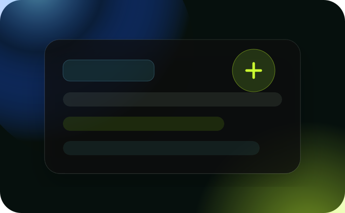

Creators
Receive the angle, content guardrails, and intake path.
Early access application
Use this form to request the influencer brief, apply for an operator pilot, or start a partner conversation. Hyzer is reviewing fit, audience, and launch readiness first — not selling a generic software plan.

What happens next
We review for fit, urgency, and responsibility. The best early partners know their audience, understand their role, and want the public story to stay accurate from day one.
Receive the angle, content guardrails, and intake path.
Map messaging, intake, and partner needs.
Align on role, language, and referral flow.